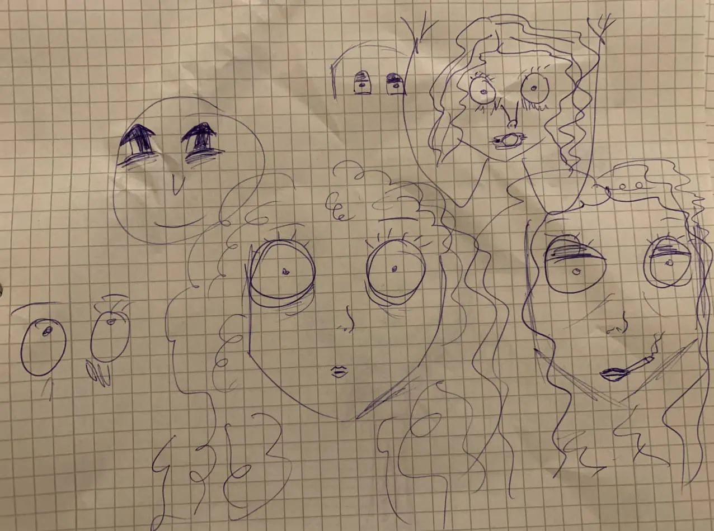
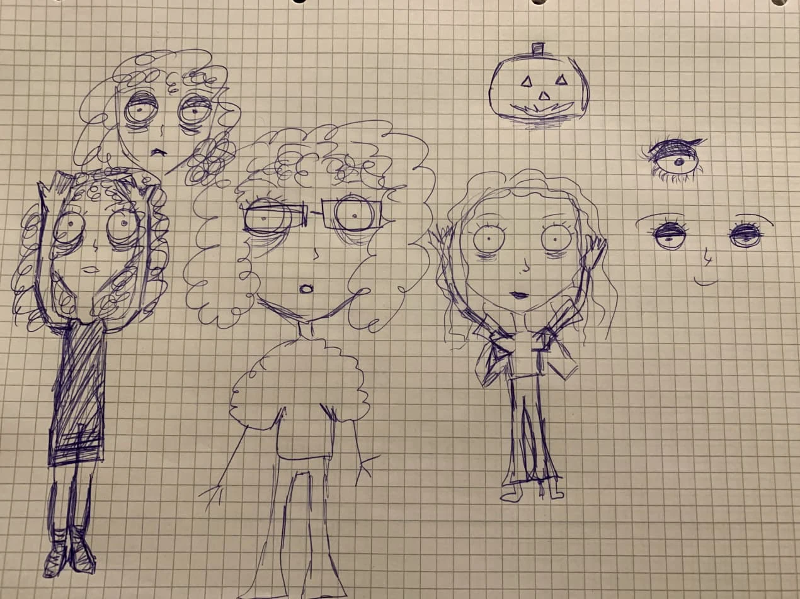
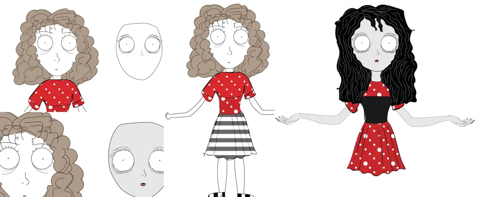
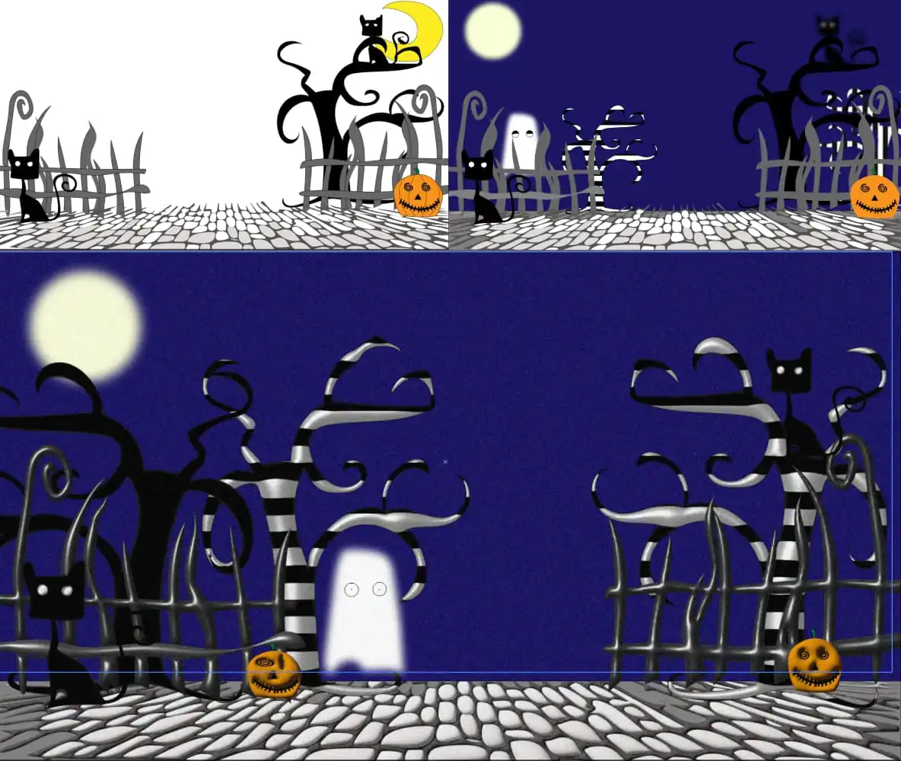

I Tema 4 arbejdede vi med grundlæggende animation og skulle udvikle
vores eget spil. Mit spil, Pumpkin Catch, har Halloween som tema og
er inspireret af Tim Burtons dystre tegnestil. En af de største
udfordringer var at skabe et skitseret og håndtegnet look i
Illustrator, der passede til spillets stemning.


Tegne i Illustrator
Efter at have skitseret min idé i hånden, var det tid til at arbejde
i Illustrator og øve mig i værktøjerne. Her finpudsede jeg min
spilfigur samt de forskellige assets og UI-elementer til spillet.
Det var en spændende proces, hvor jeg lærte at skabe detaljerede og
professionelle grafiske elementer.

Vi skulle også arbejde med baggrunden
For at gøre baggrunden mere interessant tilføjede jeg dybde til det
skæve hegn ved hjælp af 3D-effekten inflate. Den samme effekt brugte
jeg på græskarene for at skabe et mere levende udtryk.
For at give spillet et glødende, håndtegnet look anvendte jeg grain
og gaussian blur på månen, spøgelset og bag teksten. Baggrunden og
de øvrige elementer (undtagen figuren) fik også en let grain-effekt,
hvilket hjalp med at lysne spillet, der foregår om natten.

Introduktion til JavaScript
Vi blev introduceret til grundlæggende JavaScript og startede helt
fra bunden med vores første "Hello World". Gennem øvelser og
undervisning fik jeg gradvist opbygget mit eget spil med mine egne
figurer og elementer, hvilket gav mig en praktisk forståelse af
programmeringens muligheder.
Det færdige spil
Projektet blev afsluttet med en solid basisforståelse af JavaScript
og dets funktioner. Samtidig gav projektet mig en bredere viden om
Adobe-værktøjer, som vi brugte for første gang, til at skabe unikke
grafiske elementer og animationer til spillet.